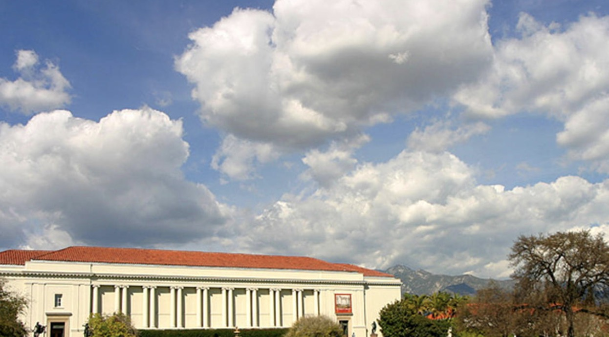

Food |
 Places to Visit |
 Map |
 Bibliography |
1. Griffith Observatory and Griffith Park
2800 E. Observatory Road Los Angeles, CA 90027
Opening Hours: Sunrise~10PM
Price: Free
Griffith Observatory is located on the south face of Mount Hollywood and overlooks the Los Angeles basin. Its location gives visitors impressive views of the surrounding area. The observatory also has fascinating exhibitions and a planetarium. Griffith Park is the largest urban park in American. It features 50 miles of hiking and biking trails. In the park, you will find the LA Zoo & Botanical Gardens, the Hollywood sign, and the Autry Museum of the American West.
2. Hollywood Bowl
2301 N Highland Ave, Los Angeles, CA 90068
Opening Hours: Only open on events (Usually once everyday or every 2 days)
Price: $15 ~ $133
The Hollywood Bowl is an outdoor amphitheatre that's been hosting concerts since 1922. There are 18,000, and is the summer home of LA Phil, an American band. When there are no performances, it is used as a public park.
3. Los Angeles County Museum of Art (LACMA)
5905 Wilshire Blvd, Los Angeles, CA 90036
Opening Hours: 11 AM ~ 5 PM
Price: $15
LACMA is the largest art museum in the western United States. It showcases nearly 140,000 objects from 6,000 years of artistic expression around the world.
4. Universal Studios Hollywood & CityWalk
100 Universal City Plaza, Universal City, CA 91608
Opening Hours: 9 AM ~ 7 PM
Price: $120
Universal Studio Hollywood is one of the first things people think of when Hollywood is mentioned. Even though it lacks both Disneyland's charm and the terror inspired by Six Flags Magic Mountain, USH's theme park offers thrills, worth while memories, and an illusion of Hollywood glamor. Recommendations are Waterworld, Despicable Me, and the Wizarding World of Harry Potter.
5. Silver Lake Stairs
3400 Sunset Blvd, Los Angeles, CA 90026
Opening Hours: All the time
Price: Free
In Silver Lake, there are dozens of outdoor stairways that are painted beautifully. Though some homeowners will try to prevent open access, the stairs are for public uses.
6. Hollywood Walk of Fame
N Highland Ave &, Hollywood Blvd, Los Angeles, CA 90028
Opening Hours: All the time
Price: Free
The Hollywood Walk of Fame includes more than 2,600 five-pointed terrazzo and brass stars embedded in the sidewalks along 15 blocks of Hollywood Boulevard and three blocks of Vine Street in Hollywood, California.
7. Huntington Library
1151 Oxford Rd, San Marino, CA 91108
Opening Hours: 10 AM ~ 5 PM
Price: $18

Besides just being a library, the Huntington Library also has an art collection and a botanical garden. The library has over six million items and is only open to researchers. The art collection was built in 1910. The main section is full of collections of British art. The highlights of the Huntington Library are the outdoor botanical gardens. 120 acres of it are open to the public, and are divided into different themes, such as the Desert Garden, which is packed with cacti, and the Children's Garden, which has educational and entertaining features.
8. California Science Center
700 Exposition Park Dr, Los Angeles, CA 90037
Opening Hours: 10 AM ~ 5 PM
Price: $9
The California Science Center opened in 1998 in front of the Rose Garden in Exposition Park. Some exhibit lights in the museum include the Kelp Tank, which is populated with 1,500 live fish, kelp, and other marine life; the High-Wire Bicycle, which allows people to ride a bike along a one-inch wire 43 feet about the ground; and Tess, the 50-foot body simulator.
9. Los Angeles City Hall
200 N Spring St, Los Angeles, CA 90012
Opening Hours: 8 AM ~ 5 PM
Price: Free
The LA city hall is a white concrete tower that has been a city icon since 1928. It's the easiest way to see an elevated view of Downtown LA. A recommended spot is an observation deck on the 27th floor.
10. Point Dume State Beach
6800 Westward Beach Rd, Malibu, CA 90265
Opening Hours: 9 AM ~ 8 PM
Price: Free (Need to pay for parking)
This beach is wide and spacey, and it's rarely crowded as well. You can repel the beach's namesake rock face or hike along its summit. Point Dume is also the perfect place for a picnic.